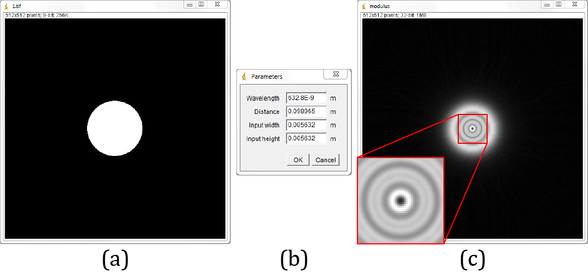

JDiffraction is a numerical wave propagation library for Java. Includes angular spectrum, Fresnel-Fourier and Fresnel-Bluestein methods. Aditionally it includes an utilities class, designed to work with the complex arrays required by the library.
Currently it only supports calculation on CPU, in later versions we expect to add the posibility of calculation on GPGPU using JCuda.
If you are using JDiffraction and find a bug, please contact us.
Examples
An example of usage of JDiffraction on a simple ImageJ's plugin. Diffraction of a circular aperture using the angular spectrum method. The parameters are meant to produce an even number of Fresnel zones on the diffraction pattern.

(a) Circular aperture. (b) GenericDialog for parameters. (c) Modulus of the propagated field.
Code:
import ij.*;
import ij.gui.GenericDialog;
import ij.process.*;
import ij.plugin.filter.*;
import unal.od.jdiffraction.cpu.FloatAngularSpectrum;
import unal.od.jdiffraction.cpu.utils.ArrayUtils;
public class JDiffraction_Example implements PlugInFilter {
ImagePlus imp;
@Override
public int setup(String arg, ImagePlus imp) {
this.imp = imp;
return DOES_ALL;
}
@Override
public void run(ImageProcessor ip) {
//gets the image data and creates the complex array
int M = ip.getWidth();
int N = ip.getHeight();
float[][] image = ip.getFloatArray();
float[][] field = ArrayUtils.complexAmplitude2(image, null);
//unlocks the image because it's no longer needed
imp.unlock();
//Creates a GenericDialog object to ask the user for propagation
//parameters
GenericDialog gd = new GenericDialog("Parameters");
gd.addNumericField("Wavelength", 633E-9, 10, 10, "m");
gd.addNumericField("Distance", 1, 2, 10, "m");
gd.addNumericField("Input width", 5E-3, 4, 10, "m");
gd.addNumericField("Input height", 5E-3, 4, 10, "m");
gd.showDialog();
if (gd.wasCanceled()){
return;
}
float wavelength = (float) gd.getNextNumber();
float distance = (float) gd.getNextNumber();
float inputWidth = (float) gd.getNextNumber();
float inputHeight = (float) gd.getNextNumber();
//Creates the AngularSpectrum object and diffracts the input field
FloatAngularSpectrum as = new FloatAngularSpectrum(M, N, wavelength,
distance, inputWidth / M, inputHeight / N);
as.diffract(field);
//Calculates the modulus of the output field and shows it
float[][] modulus = ArrayUtils.modulus(field);
ImageProcessor ipModulus = new FloatProcessor(modulus);
ImagePlus impModulus = new ImagePlus("modulus", ipModulus);
impModulus.show();
}
}
API
JDiffraction API can be found here.
Downloads
Credits
JDiffraction uses JTransforms FFT routines.
Contact
- Pablo Piedrahita-Quintero (jppiedrahitaq@unal.edu.co)
- Carlos Trujillo (calelo36@gmail.com)
- Jorge Garcia-Sucerquia (jigarcia@unal.edu.co)